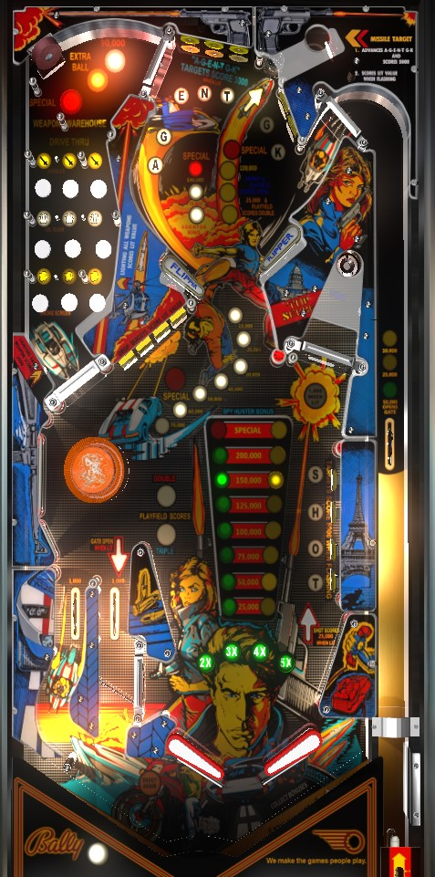

Hitting lit AGENT GK targets in the upper part of the playfield lights the Boop-Ball captive ball to score moderate points and activate playfield multipliers. With multipliers active, shoot the middle-right saucer whenever a yellow bonus value is lit; this is qualified by making the shooter lane skill shot, completing the SHOT targets in the lower right, or (on easy settings) completing the drop targets. Bonus comes from lit rollover buttons in the top left, drop target completions, and lit AGENT GK targets; bonus is multiplied through drop target completions. Beware the bottom of the playfield; the whole lower-left quadrant is danger.
The skill shot is a timed plunge. Whatever value in the shooter lane is lit when the ball passes over the shooter lane switch is scored. This rotates on its own between 10,000, 25,000, or 50,000 points. If you earn the 50,000, the game will also open the free-ball gate in the near left out lane, and on easy settings, the right saucer will be lit as well.
Hitting a lit AGENT GK target scores 3,000 points and moves the light to the next target in order. Hitting an unlit target scores 1,000 points. Hitting 3 or 4 lit targets (depending on game settings) lights the Boop-Ball captive ball, located between the T and second G targets. The completion bonus for hitting a set of lit AGENT GK targets is 70,000 the first time AGENT GK is completed in one ball, 140,000 the second time, and a Special thereafter (worth only 50,000 in competition play). Each lit AGENT GK target hit during a ball is worth 10,000 points times bonus multiplier during end of ball bonus.
When not lit, the Boop-Ball captive ball scores 5,000 points and spots an AGENT GK target. When the Boop-Ball is lit, the Missile Value behind the Boop-Ball arrow is scored: 25,000 points + 2x Playfield the first time it is collected on one ball, 50,000 points + 3x Playfield the second time, 100,000 points + Special the third time, and 100,000 points thereafter. Hitting the Boop-Ball when lit will unlight it.
The upper left bagatelle is entered via the gate in the upper chamber between the first G and E targets. Pressing an unlit rollover button scores 3,000 points and lights it. Lit rollover buttons score 1,000 points. There are 3 rows of 3 buttons each; right flipper lane change will rotate which buttons are lit within each horizontal row.
On easy settings: lighting all 9 buttons scores extra ball the first time and 90,000 + Special the second time.
On hard settings: lighting all 9 buttons scores nothing the first time, 90,000 + extra ball the second time, and 90,000 + Special the third time.
After earning 90,000 + Special, subsequent completions can earn either 90,000 + Special or just the 90,000, depending on a game adjustment that is independent from the previously listed easy/hard settings.
Lit rollover buttons in the bagatelle area each score 10,000 points times bonus multiplier during the end of ball bonus.
The exit feed from the bagatelle area is designed to bounce off the top of the pop bumper and arc to the right toward the flippers, but this does not always happen. Watch the speed of this feed carefully to decide whether a nudge is needed to encourage the ball to go further right or give it more 'oomph' off the pop bumper. If the ball falls flat out of the bagatelle, it is very likely to end up in one of this table's huge left out lanes.
Each drop target down in the center 4-bank scores 500 points. Completing the bank resets the bank as well as scoring and advancing the lit value, which starts at 10,000 points and increases 10,000 at a time, up to a maximum of 70,000 points. At some point in the progression- anywhere from 40,000 to 70,000 based on game settings- the drop targets will also score a Special when completed, which can only be earned once per ball.
Completing the drop target bank always increments the bonus multiplier toward its maximum of 5x, and also always opens the gate in the near left out lane, turning it into a one-time-use in lane that directs the ball toward the left flipper. On easy settings, completing the drop targets also lights the right saucer for a Center Value.
With respect to the rules surrounding the right saucer, Spy Hunter has two game modes: Skill Mode and Random Mode. Both are described below.
Skill Mode
If the right saucer has not been qualified, it scores 5,000 points. If it has been qualified, the lit Center Value is scored and advanced in the sequence 25,000 - 50,000 - 75,000 - 100,000 - 125,000 - 150,000 - 200,000 - Special. To qualify the saucer, you must either score a 50,000-point skill shot, complete the SHOT targets in the lower right, or (on easier settings) completing the drop target bank. When the saucer is qualified, the white arrow pointing upwards in the lower right of the game will be lit.
Random Mode
In random mode, the right saucer is always qualified, but the lit green Center Value is only award if the corresponding yellow light is lit when the spinner stops moving. Yellow lights rotate with each spin of the spinner, making it effectively random whether they line up or not. There is a 4/8 chance that collecting the 25,000 or 50,000 award will be successful; this decreases to 3/8 for 75,000 and 100,000, and either 2/8 (liberal setting) or 1/8 (conservative setting) for all awards higher than 100,000. Since the saucer does not need to be qualified, the SHOT targets serve only to light the right spinner, and the 50,000 skill shot will only open the near left outlane gate.
The spinner scores 100 points per spin when not lit. Hit a flashing target to score 5,000 points and light it solidly. Solidly lit targets score 2,000 points. Solidly lighting all 4 SHOT letters lights the spinner and causes the SHOT targets to flash again. The spinner scores 1,000 points per spin when lit, but unlights itself after being shot once. Completing SHOT again when the spinner is lit scores 25,000 points.
In the humble opinion of the author, Spy Hunter should always be set to Skill Mode. The saucer is a safe enough shot that if it always has a chance of high value, it is the only thing worth shooting on the playfield; subsequently, if the saucer is the only thing worth shooting, it is 100% luck-based who would win a multiplayer game or how long it would take to make a high score. In Skill Mode, players are incentivized to shoot around the entire table, earning points from various features and forcing adjustment and improvement in what can be a very fast-playing and dangerous game.
The bottom of Spy Hunter is extremely unconventional. Rather than being centered horizontally at the bottom of the playfield, the game's two main flippers are shifted right. There is no right in lane or out lane; just a slingshot that bridges the space between the right flipper and the SHOT standup targets. On the left are two very wide out lanes that are only partially blocked by the game's lone pop bumper. Both out lanes score 1,000 points. The far left out lane is always an out lane, and a ball that goes down it can never be saved. The near left out lane includes a gate, which is opened by either completing the drop targets or scoring a 50,000-point skill shot. The gate turns the out lane into a one-time-use in lane, directing the ball toward the left flipper. The gate is closed when it is used or when the ball drains.
In general, take care to avoid the entire lower-left quadrant of the table. In an ideal game, the ball will never go near the out lanes, and will only interact with the pop bumper very briefly upon exiting the bagatelle Warehouse area.
End of ball bonus is calculated as 10,000 points per Warehouse rollover button lit this ball, plus 10,000 points per lit AGENT GK target hit this ball, plus the current drop target completion value, all multiplied by the bonus multiplier. Bonus multiplier is advanced 1 at a time with each completion of the drop targets up to the maximum of 5x. The game can be set to carry over the number of lit rollover buttons in the current set from ball to ball, but completed button sets, scored lit AGENT GK letters, the drop target value, and the bonus multiplier are all reset from ball to ball.
In competition/novelty play, all Specials score 50,000 points and all extra balls score 25,000 points. These are pitiful sums compared to the value of the rest of the playfield and can be ignored.